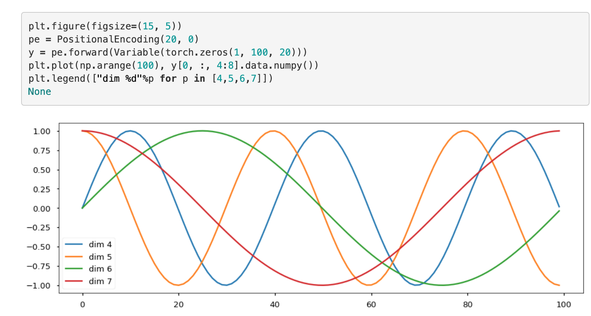
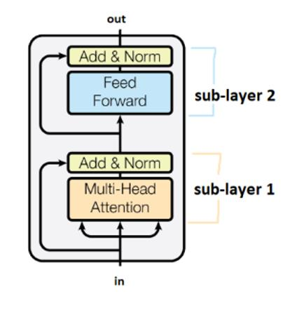
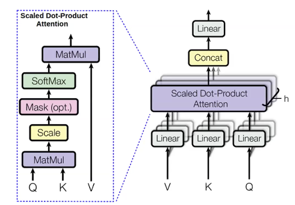

For a portuguese version of this post, please check this
A quick review
I remember someday of 2016 while I was starting my career as a Data Scientist when I’ve stumped into Chirs McCormick blog about Word2Vec. Honestly, I think that Tomas Mikolov paper was one of the most elegant and simple idea that I have ever found so far {% fn 1 %} :)
{{ ‘Fun Fact: Whereas nowadays Miklov LinkedIn profile points out that he has worked for Microsoft, Google and Facebook; another of W2V authors, Ilya Sutskever worked with some of the prestigious researchers in the recent AI area, such as Geoffrey Hinton and Andrew Ng. Moreover, he is one of the founders of Open AI!’ | fndetail: 1 }}
A simple lookup table (…) of a fixed dictionary and size.
Then, we can interpret embeddings as a simple way to convert integers into vectors of a given size. Then, for word embeddings, we can interpret simply as words that are encoded as integers, and then these integers serve as inputs for a vector space.’
A have written some code with manim to illustrate this process:
We can then interpret each dimension as a single neuron of a hidden layer, and then these embedding numbers can be modified from a learning algorithm through a neural network. This is the main motivation behind Word Embeddings algorithms such as Word2Vec and fastText {% fn 2 %}
Nowadays, there are some libraries that provide already trained vectors based on a fixed and previously trained vocabulary. For instance, considerer the following Spacy code:
{{ ‘I am not going to cover word embeddings through this blog post. If you are not familiarized with them, I highly recommend this; this and this as potential resources :)’ | fndetail: 2 }}
Code
import spacynlp = spacy.load("en_core_web_md")print("Coniderer the sentence 'The quick brown fox jumps over the lazy dog!!'")text = nlp("The quick brown fox jumps over the lazy dog!!")for word in text:print(f"'{word.text}' vector representation has size of {word.vector.shape[0]}. Its first five elements are: {word.vector[:5].round(2)}" )
Coniderer the sentence 'The quick brown fox jumps over the lazy dog!!'
'The' vector representation has size of 300. Its first five elements are: [ 0.27 -0.06 -0.19 0.02 -0.02]
'quick' vector representation has size of 300. Its first five elements are: [-0.45 0.19 -0.25 0.47 0.16]
'brown' vector representation has size of 300. Its first five elements are: [-0.37 -0.08 0.11 0.19 0.03]
'fox' vector representation has size of 300. Its first five elements are: [-0.35 -0.08 0.18 -0.09 -0.45]
'jumps' vector representation has size of 300. Its first five elements are: [-0.33 0.22 -0.35 -0.26 0.41]
'over' vector representation has size of 300. Its first five elements are: [-0.3 0.01 0.04 0.1 0.12]
'the' vector representation has size of 300. Its first five elements are: [ 0.27 -0.06 -0.19 0.02 -0.02]
'lazy' vector representation has size of 300. Its first five elements are: [-0.35 -0.3 -0.18 -0.32 -0.39]
'dog' vector representation has size of 300. Its first five elements are: [-0.4 0.37 0.02 -0.34 0.05]
'!' vector representation has size of 300. Its first five elements are: [-0.27 0.34 0.22 -0.3 -0.06]
'!' vector representation has size of 300. Its first five elements are: [-0.27 0.34 0.22 -0.3 -0.06]
Contains word representations that were trained on Common Crawl data using GloVe algorithm. Unlike the example that I used initially, the word ‘!’ was encoded as well.
We can combine different words to form the embedding of a phrase. According to spacy documentation: > Models that come with built-in word vectors make them available as the Token.vector attribute. Doc.vector and Span.vector will default to an average of their token vectors.
Then, the phrase the we are using as example has the following single representation:
First 5 values of 'The quick brown fox jumps over the lazy dog!!': [-0.23 0.08 -0.03 -0.07 -0.02]
Limitations of Word Embeddings
Even though Word Embeddings brings many benefits in the realm of computational linguistics, they have some limitations. There is a linguistic phenomenon called polysemy. According to wikipedia: > A polyseme is a word or phrase with different, but related senses.(…) English has many polysemous words. For example, the verb “to get” can mean “procure” (I’ll get the drinks), “become” (she got scared), “understand” (I get it) etc.
So considering the example above, despite the fact that the verb has different meaning depending on the contexts, it’s word representation would always be the same
First 5 values of verb 'to get' vector: [ 0.03 0.12 -0.32 0.13 0.12]
Then, if we pick two phrases: She got scared and She understand it, we will get the following vectors
text1 = nlp("He will get scared")text2 = nlp("She will get the drinks")print(f"First 5 values of sentence '{text1}' vector: {text1.vector[:5].round(2)}")print(f"First 5 values of sentence '{text2}' vector: {text2.vector[:5].round(2)}")
First 5 values of verb 'He will get scared' vector: [-0.12 0.19 -0.21 -0.14 0.09]
First 5 values of verb 'She will get the drinks' vector: [ 0.01 0.13 -0.04 -0.08 0.03]
Then, if we take the cosine similarity by taking the average of the word vectors:
Code
from sklearn.metrics.pairwise import cosine_similarityprint(f"Similarity between:\n '{text1}' and '{text2}': "f"{cosine_similarity(text1.vector.reshape(1, -1),text2.vector.reshape(1, -1))[0][0]}")
Simlarity between:
'He will get scared' and 'She will get the drinks': 0.8653444051742554
This indicates that both vectors would be a lot similar. However, the reason for that is the usage of similar words, even considering that they were applied in different contexts! So there is the objective that BERT tries to solve.{% fn 3 %}
The Attention is all you need paper have introduced the Transformer architeture for us :) In sense, it can be summarized as the picture below:
Strictly speaking, the motivation behind the paper is that RNN-like architetures are memory-expensive. The purpose behind Transformer models is that it you can achieve similar results using more computer efficient resources by applying just attention mechanisms (and exluding the CNN or RNN-like architetures) !{% fn 4 %} Despite the fact that the Transformer model was proposed to deal with translation problems, it turns out that we can also use variations of it to achieve awesome results in different tasks. This is the motivation behind BERT!
{{ ‘The NLP group from Harvard has written a great blog post distilling the paper as well as implementing them in pytorch. If you have some interest in knowing details about the transformer architecture, I recommend looking at it!’ | fndetail: 4 }}
Transformers are made up of attention modules, which are mappings between sets, rather than sequences, which means we do not impose an ordering to our inputs/outputs.
When we analyze the transformer architeture, we can see that both Multi-Head Attention and Multi-Head Masked Attention box have 3 Arrow Heads. Each one represents one of the following:
Q that stands for query vector with dimension \(d_k\)
K that stands for key vector that also has dimension \(d_k\)
V that stands for value vector that also has dimension \(d_v\)
KV pair can be understood as the encoded representation of the input whereas the Q is the output of a previous layer.
A key-value store is a paradigm designed for storing (saving), retrieving (querying), and managing associative arrays (dictionaries/hash tables)
For example, say we wanted to find a recipe to make lasagne. We have a recipe book and search for “lasagne” - this is the query. This query is checked against all possible keys in your dataset - in this case, this could be the titles of all the recipes in the book. We check how aligned the query is with each title to find the maximum matching score between the query and all the respective keys. If our output is the argmax function - we retrieve the single recipe with the highest score. Otherwise, if we use a soft argmax function, we would get a probability distribution and can retrieve in order from the most similar content to less and less relevant recipes matching the query.
Basically, the query is the question. Given one query, we check this query against every key and retrieve all matching content.
Warning
I have decided not to cover attention concepts in this post, giving just a higher-level introduction. As you might have noticed, NYU Deep Learning Foundations Course provides a really nice introduction about the topic that I recommend going through if you want to learn more :)
Note
Attention can be basically understood as measure of correlation of words between a set of sentences. For those interested to learn a little bit more, I highly recommend this blog post
Positional Encoding
This was taken from The annotated transformer blog where you can find a cool pytorch implementation. It turns out that actually this is a quote from Attention is all you need paper:
Since our model contains no recurrence and no convolution, in order for the model to make use of the order of the sequence, we must inject some information about the relative or absolute position of the tokens in the sequence. To this end, we add “positional encodings” to the input embeddings at the bottoms of the encoder and decoder stacks. The positional encodings have the same dimension \(d_{model}\) as the embeddings, so that the two can be summed

The BERT model
BERT model itself is an encoder model only from the transformer model. Considering the models trained from the paper, the base model consists of 12 encoder-stacked layers and the large model consists of 24 encoder-stacked layers.
The encoder is composed of a stack of \(N = 6\) identical layers. Each layer has two sub-layers. The first is a multi-head self-attention mechanism, and the second is a simple, position wise fully connected feed-forward network. We employ a residual connection around each of the two sub-layers, followed by layer normalization.

The Multi-Head Attention
Basically, the multi head attention is a type of an attention mechanism. It is a concatenation of another type of attention, the scaled dot. Both mechanisms works together as represented in the following image:

Note
Scaled Dot-Product Attention is calculated by \(softmax(\frac{QK^T}{\sqrt{n}})V\), where K, V and Q are the same as the ones described in a previous section whereas n represents the number of elements in the set.
Here, h, or the number o attention heads (or layers) is equal to \(12\) in the case of \(\text{BERT}_\text{base}\) and \(16\) in the case of \(\text{BERT}_\text{large}\)
Residual Conections
Each sublayer of the encoder stack contains a residual connection (the left curved arrow) added to the sublayer output before layer normalization. The idea of Residual Conections came from Computer Vision domain, and actually, it is a relatively simple technique that can be summarized by the following image:
Considering the image above and the case of Encoder stack, each \(\mathcal{F}(x)\) means either the Multi-Head Attention or Feed Forward. Therefore, quoting the paper:
That is, the output of each sub-layer is LayerNorm(x + Sublayer(x)), where Sublayer(x) is the function implemented by the sub-layer itself. To facilitate these residual connections, all sub-layers in the model, as well as the embedding layers, produce outputs of dimension \(d_{model} = 512\) {% fn 5 %}.
{{ ‘In the case of BERT model, please have in mind that \(N\) is either \(12\) (BERTbase) or \(24\) ((BERTlarge) and dmodel is 768 for BERT base and 1024 for BERT large’ | fndetail: 5 }}
Then, what, in fact, is being encoded?
Embedding Representation
The authors would like to make BERT to perform well in different downstream tasks such as binary and multi lablel classification; language modeling; question and answering; named entity recognition; etc. Therefore, they said the following:
our input representation is able to unambiguously represent both a single sentence and a pair of sentences (e.g., h Question, Answer) in one token sequence. Throughout this work, a “sentence” can be an arbitrary span of contiguous text, rather than an actual linguistic sentence. A “sequence” refers to the input token sequence to BERT, which may be a single sentence or two sentences packed together
In order to perform and create the sentence embeddings, WordPiece tokenize is applied. Then, besides adding [CLS] token, pairs of sentence (e.g. sentence A and B) are concatenated into a single sentence, being separated with a special token [SEP] (e.g. A [SEP] B).
Then:
For a given token, its input representation is constructed by summing the corresponding token, segment, and position embeddings.
BERT Pre Training
The first part of BERT is a pre Training procedure that involved two objective functions
Masked Language Model (MLM)
As we are feeding the whole sentence into the model, it is possible to say that the model is bidirectional and hence as we are trying to predict the next word in a sentence, it would has access to it! Then, the idea behind this task is pretty simple. We can directly quote from the paper:
Unfortunately, standard conditional language models can only be trained left-to-right or right-to-left, since bidirectional conditioning would allow each word to indirectly “see itself”, and the model could trivially predict the target word in a multi-layered context.
In order to train a deep bidirectional representation, we simply mask some percentage of the input tokens at random, and then predict those masked tokens. We refer to this procedure as a “masked LM” (MLM), although it is often referred to as a Cloze task in the literature. In this case, the final hidden vectors corresponding to the mask tokens are fed into an output softmax over the vocabulary, as in a standard LM.
In the case of BERT model, 15% of each sentence were masked during training.
Next Sentence Prediction (NSP)
In order to learn relationships between pair of sentence (e.g. Question and Ansering tasks) the authors needed a different approach than plain Language Modeling. Then:
In order to train a model that understands sentence relationships, we pre-train for a binarized next sentence prediction task that can be trivially generated from any monolingual corpus. Specifically, when choosing the sentences A and B for each pretraining example, 50% of the time B is the actual next sentence that follows A (labeled as IsNext), and 50% of the time it is a random sentence from the corpus (labeled as NotNext).
Once defined, both objected functions are used in BERT Pre training learning :)
Note
The training loss is the sum of the mean masked LM (MLM) likelihood and the mean next sentence prediction (NSP) likelihood
Important
You may have noticed but this training procedure does not require labeling. As we are using the raw text inputs to generate the labels during training, e considerer this BERT Pre Training as a self-surpervised model!
Putting all together
As we are dealing with sentence embeddings than word embeddings we need a clever way to, well, encode these sentences. Let’s see how BERT do it:
We first take a text as input
We apply WordPiece Tokenizer
We fed the input into the Encoder stack
We train the network (Pre-Training step)
For those familiar with CNN we can say that [CLS] embedding works as a “pooled” representation (ref) of the sentence and then can be used as a contextual embedding feature. Hence, it can be fed into a Neural Net to solve classification tasks!
Depending on the downstreaming task (Fine tuning task) other token embeddings can be used as well
Important: without the fine-tuning task, CLS vector is not a meaninful representation since it was trained with NSP (ref)
I have tried to summarize a foward pass of BERT thorugh the following gif:
Working in Practice
To show sentence embedding from BERT working, I usually rely on Hugging Face’s transformer library. Here, since the Bert Model for Language Model was trained already, I will be using the bare BERT Model without any specific head (e.g., LanguageModeling head or Sentence Classification head) on top of it!
sequence_0 ="He will get scared"sequence_1 ="She will get the drinks"
Code
sequence_0_w2id = tokenizer.encode(sequence_0) # we need to map words to id's :)sequence_1_w2id = tokenizer.encode(sequence_1)print(f"Sequence 0 word2Id mapping: {sequence_0_w2id}")print(f"Sequence 1 word2Id mapping: {sequence_1_w2id}")
It turns out that this model generates one embedding for each word plus CLS and SEP tokens. This explains why sentence_0 and sentence_1 both start and end with the same token number! Let’s perform some cool math to analyze some patterns :)
First, let’s analyze the similarity between CLS and token words
Code
CLS_TOKEN_0 = sequence_0_embeddings[0]CLS_TOKEN_WORDS_0 = np.mean(sequence_0_embeddings[[1, 2, 3, 4]], axis=0)print(f"Cosine Similatiry between CLS token and the average of\n'{sequence_0}'"f" tokens: {cosine_similarity(CLS_TOKEN_0.reshape(1, -1), CLS_TOKEN_WORDS_0.reshape(1, -1))[0][0]}")
Cosine Similatiry between CLS token and the average of
'He will get scared' tokens: 0.29071152210235596
Code
CLS_TOKEN_1 = sequence_1_embeddings[0]CLS_TOKEN_WORDS_1 = np.mean(sequence_1_embeddings[[1, 2, 3, 4]], axis=0)print(f"Cosine Similatiry between CLS token and the average of \n'{sequence_1}'"f" tokens: {cosine_similarity(CLS_TOKEN_1.reshape(1, -1), CLS_TOKEN_WORDS_1.reshape(1, -1))[0][0]}")
Cosine Similatiry between CLS token and the average of
'She will get the drinks' tokens: 0.32392317056655884
It is interesting since as stated by the paper, the CLS token seems to be meaninfulless. Then, let’s analyze the similarity between the average tokens embeddings of each sentence
Cosine Similatiry between average of embedding tokens of
'He will get scared'and 'She will get the drinks' tokens :0.6591895222663879
As expected, despite the fact that similar words were used, their contexts were totally different and therefore, their embeddings similarities were less than the plain word vectors :)
Conclusion
Congratulations! You have learned the main concepts behind the BERT model :) Please stay tuned, tor future blog posts :) I intend adding distillation about some BERT fine tuning as well as dissecting it from scratch!
 and M is 4.")